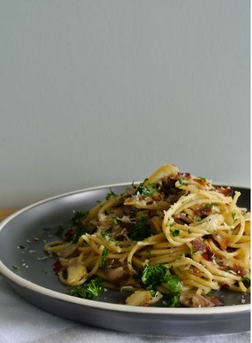

Garlic Pasta

Description
Garlic pasta is a simple dish made by mixing cooked pasta with sautéed garlic and olive oil. It has a rich, savory flavor that can be enhanced with Parmesan cheese and fresh herbs. Quick and easy, it`s a comforting meal perfect for any day.
- Pasta (spaghetti, linguine, or your choice)
- Olive oil
- Garlic cloves
- Salt
- Black pepper
- Red chili flakes (optional)
- Parmesan cheese (optional)
- Fresh parsley (optional)
- Lemon juice (optional)
Steps
- Cook the pasta in salted water until al dente; drain.
- In a pan, heat olive oil and sauté minced garlic until golden, being careful not to burn it.
- Optional: Add red chili flakes for some heat.
- Toss the pasta in the pan with the garlic and olive oil.
- Season with salt and pepper to taste.
- Serve with grated Parmesan cheese and chopped parsley if desired.